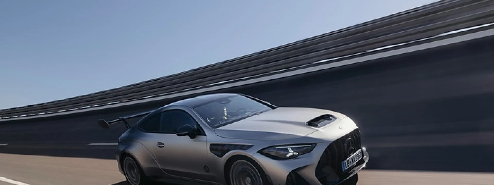
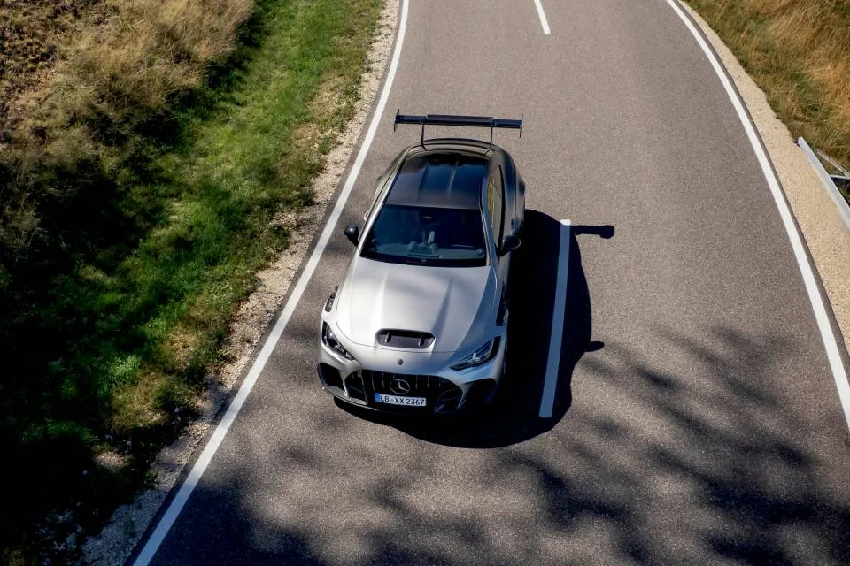
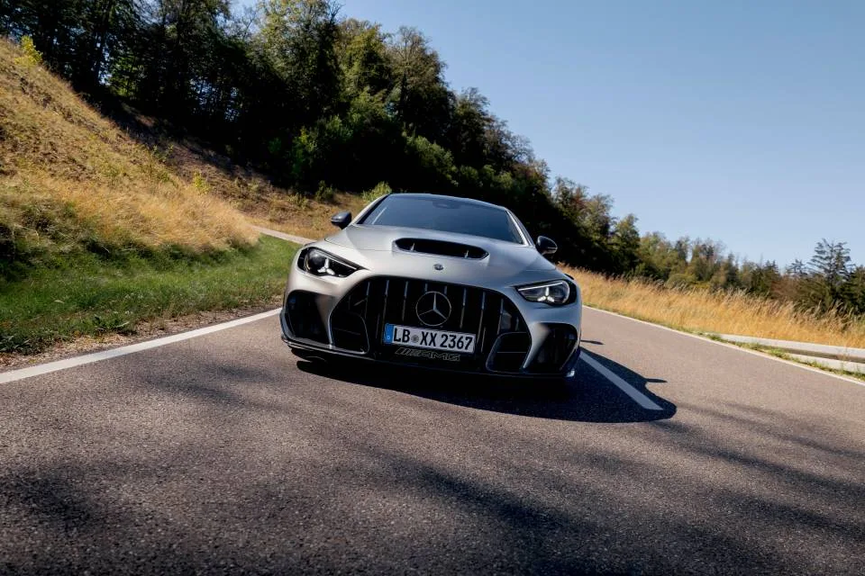
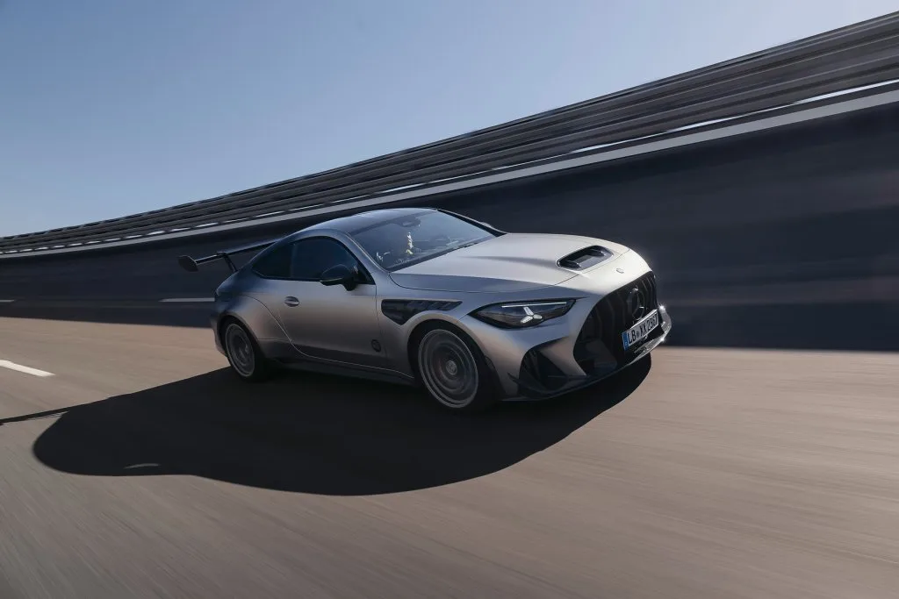
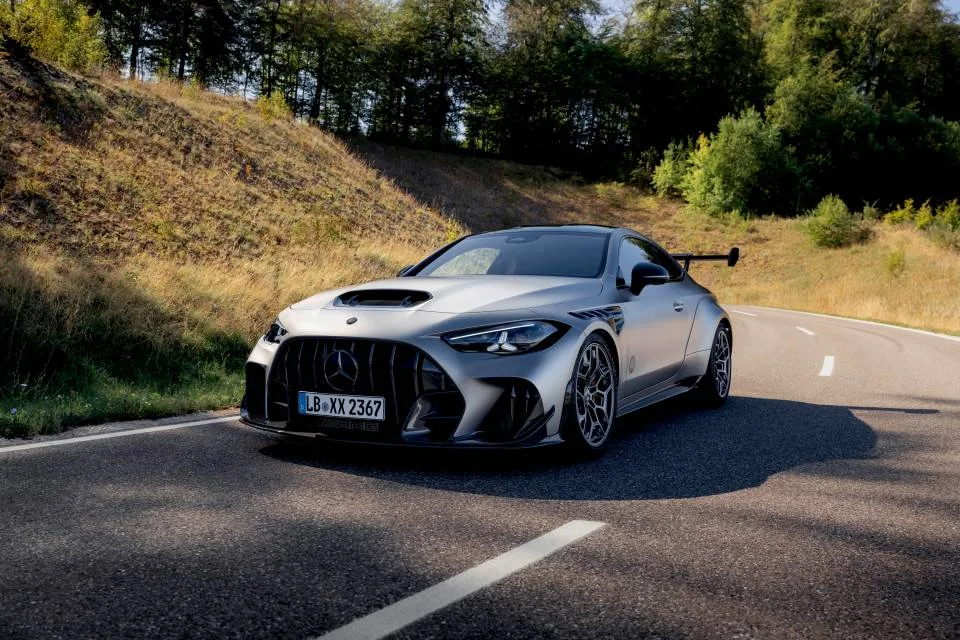

▲ 메르세데스-AMG CLE 646 스페치알안페르티궁. 전 세계 30대 한정, 월드 프리미어 전에 이미 완판됐다. 사진=메르세데스-벤츠 미디어
공개하자마자 완판, 왜 이렇게까지 했나
메르세데스-AMG가 CLE 쿠페를 기반으로 한 극단적 한정판 'CLE 646 스페치알안페르티궁(Spezialanfertigung)'을 공개했다. 독일어로 '특별 주문 제작'을 뜻하는 이 모델은 지난해 등장한 미드십 로드스터 AMG 퓨어스피드(PureSpeed)에 이어 메르세데스-벤츠가 새로 만든 초고가 컬렉터 한정판 라인 '미토스 시리즈(Mythos Series)'의 두 번째 주자다. 메르세데스-벤츠 미디어 공식 발표에서 확인 가능
가장 눈에 띄는 대목은 따로 있다. 전 세계 생산 대수가 단 30대로 못 박혔는데, 이 30대가 월드 프리미어(공식 공개) 이전에 이미 전량 계약 완료됐다는 점이다. 일반 소비자는 지금 아무리 돈을 싸들고 가도 신차로 구입할 방법이 없다는 뜻이다. AMG는 이 차를 '드라이빙 다이내믹스의 한계를 시험하기 위해' 개발된 프로토타입에서 출발했다고 설명한다.
디자인·외관: 순정 CLE와는 다른 차

▲ 카본파이버 루프와 고정형 리어윙. 공력 다운포스는 최고속 기준 250kg을 넘는다. 사진=메르세데스-벤츠 미디어
CLE 646은 양산형 CLE 쿠페의 차체를 그대로 쓰지 않는다. 앞뒤 양쪽 모두 60mm씩 폭이 넓어진 와이드 바디를 입었고, 프론트 펜더·프론트 에이프런·사이드 실·보닛·루프·리어 에이프런(디퓨저 포함)·트렁크 리드·리어 윙까지 카본파이버로 제작됐다. 차체 앞부분은 '모하비 실버 마그노', B필러 뒤쪽은 '옵시디언 블랙 마그노'로 나눠 칠한 투톤 무광 도장이 적용됐다. 휠은 전륜 11.0J, 후륜 12.0J 20인치에 305/30 ZR20(앞)·335/30 ZR20(뒤) 타이어를 신었고, 차고는 앞 22mm·뒤 16mm 낮아졌다.
경량화도 철저하다. 카본 패널과 폴리카보네이트 리어 윈도, 경량 12V 배터리 등을 동원해 순정 대비 약 170kg을 덜어냈고, 공차중량은 1,895kg까지 내려갔다.
파워트레인·성능: 646마력, 순수 후륜구동

▲ 카본 스플리터를 두른 와이드 프론트 범퍼와 파나메리카나 그릴. 사진=메르세데스-벤츠 미디어
심장부는 AMG의 4.0리터 V8 트윈터보 M177 EVO 엔진에 통합 스타터 제너레이터(ISG)를 더한 유닛이다. 최고출력은 646PS(637마력, 475kW), 최대토크는 850Nm에 달한다. 이름 그대로 출력 수치가 곧 모델명이다.
가장 큰 변화는 구동 방식이다. 기반이 된 AMG CLE 53은 4매틱+ 상시 사륜구동이지만, 스페치알안페르티궁은 이를 걷어내고 순수 후륜구동(RWD)으로 재설계됐다. 여기에 9단 AMG 스피드시프트 TCT 습식 클러치 변속기와 전자제어 리미티드 슬립 디퍼렌셜을 조합했다. 정지 상태에서 시속 100km까지 3.9초, 시속 200km까지는 11.4초가 걸리며 최고속도는 시속 310km에 이른다. 공인 복합연비는 15.8L/100km, 이산화탄소 배출량은 359g/km(CO₂ 등급 G)로 신고됐다.
BMW M4와 비교하면: 가속은 근소하게 밀려도 힘은 압도

▲ 카본파이버로 확장된 프론트 펜더와 에어벤트. 순정 CLE 대비 전폭이 60mm 넓어졌다. 사진=메르세데스-벤츠 미디어
Carscoops는 CLE 646을 두고 곧바로 BMW의 트랙 전용 쿠페 M4 CSL을 겨냥했다고 짚었다. 순수 가속력만 보면 M4 CSL이 시속 100km 도달까지 3.7초로, CLE 646의 3.9초보다 근소하게 빠르다. 그러나 출력에서는 격차가 크다. M4 CSL의 3.0리터 직렬 6기통 트윈터보 엔진이 내는 최고출력은 550PS인데, CLE 646의 4.0리터 V8은 이보다 100마력 가까이 높은 646PS를 뿜어낸다. BMW가 철저한 경량화로 가속력을 끌어올린 쪽이라면, AMG는 순수 배기량과 출력으로 밀어붙이는 쪽이다.
메르세데스-AMG의 양산 고성능 세단인 C 63 S E퍼포먼스(플러그인 하이브리드)와 비교해도 흥미롭다. C 63 S는 정지 가속 3.4초로 CLE 646보다 오히려 빠르다. 그럼에도 AMG가 CLE 646을 만든 이유는 속도 기록이 아니라, 하이브리드 이전 시대의 자연스러운 V8 사운드와 순수 후륜구동이 주는 '감성'에 있다는 게 두 외신의 공통된 해석이다.
구매 가능 여부: 공개 전에 이미 끝난 판매

▲ AMG 엠블럼이 박힌 파나메리카나 그릴과 카본 프론트 스플리터. 사진=메르세데스-벤츠 미디어
오토헤럴드와 Carscoops 모두 이 차의 가장 큰 특징으로 '희소성'을 꼽았다. 전 세계 30대 한정 생산에, 독일 아팔터바흐 AMG 공장에서 전량 수작업으로 만들어진다. 공식 가격은 공개되지 않았지만 외신들은 대당 100만~200만 달러(약 13억~28억 원) 수준으로 추정한다. 공개 시점에 이미 완판됐다는 점에서, 이 차는 사실상 일반 판매가 아니라 기존 AMG 컬렉터·VIP 고객을 대상으로 한 비공개 배정에 가깝다는 분석이 나온다.
앞서 나온 미토스 시리즈 1호 모델 AMG 퓨어스피드가 250대 한정이었던 것과 비교하면, CLE 646은 훨씬 더 폐쇄적인 희소성 전략을 택한 셈이다. 살 수 없는 차를 공개해 브랜드 화제성만 극대화하는 전형적인 '완판 마케팅'이라는 시각도 있다.